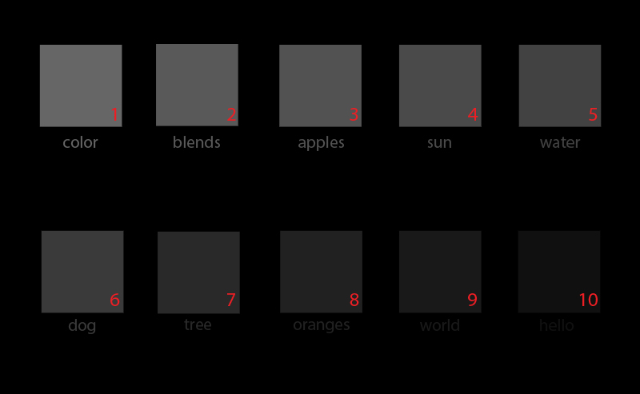
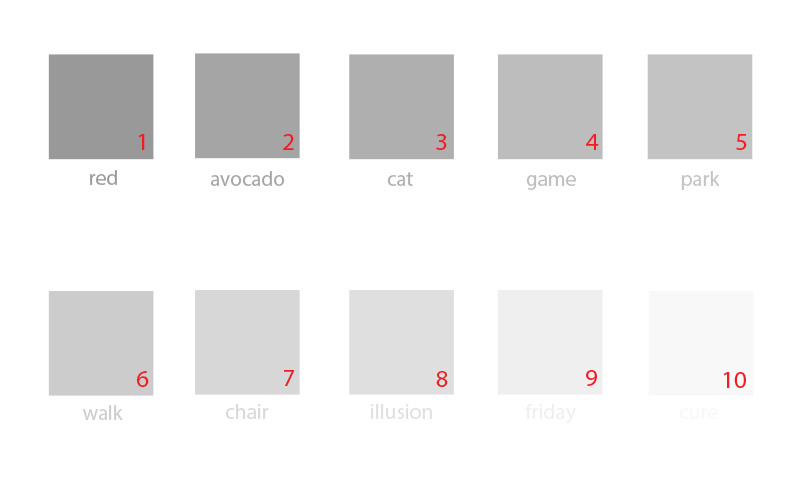

Neste passo, são-lhe apresentadas duas imagens. Deverá ajustar as definições do seu ecrã, de tal modo que lhe permita responder às questões colocadas, preservando as mesmas ao longo de todo o estudo.
Instruções.
Por favor, siga os passos abaixo descritos e responda às questões abaixo colocadas.
(Passo 1) - Se possível, ajustar as luzes da divisão para uma luz confortável para uma utilização normal do seu dispositivo.
(Passo 2) - Desviar o ecrã de qualquer reflexo. Este passo é importante, uma vez que os reflexos podem alterar a forma como as imagens são visualizadas.
(Passo 3) - Para ajustar o Ponto Preto do seu ecrã, defina o Contraste e o Brilho do ecrã para o seu máximo.
(Passo 4) - Após o Passo 3, reduzir gradualmente o Brilho do seu ecrã, de modo a que as os quadrados das imagens abaixo sejam perfeitamente diferenciáveis.
(Passo 5) - Se possível, defina a Temperatura da Cor do seu ecrã para 6500 Graus Kelvin.
(Passo 6) - Está agora pronto para dar início às perguntas!
Questão 1 de 2.
Na seguinte imagem, são apresentados diferentes quadrados em diferentes tons de preto, todos numerados a vermelho. Indique na caixa de texto correspondente, o número e a palava que consegue ler por baixo do último quadrado que lhe é perceptível,
ou NADA se não conseguir detectar nenhum quadrado nem nenhuma palavra.

Questão 2 de 2.
Na seguinte imagem, são apresentados diferentes quadrados em diferentes tons de branco, todos numerados a vermelho. Indique na caixa de texto correspondente, o número e a palava que consegue ler por baixo do último quadrado que lhe é
perceptível, ou NADA se não conseguir detectar nenhum quadrado nem nenhuma palavra.
